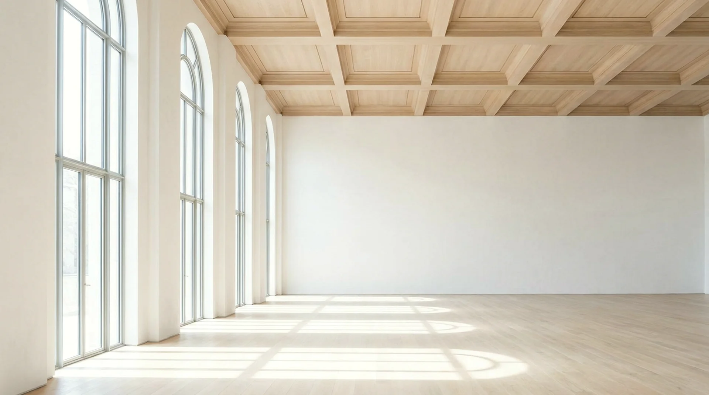

The house · Sheet A-05
A building house, not a broker
01 · Who we are
Two founders · one conviction
NOON began as an argument between a lighting engineer and a building surveyor about why the best-lit rooms in Havnsund were full of pallet racking. The argument is now a company.
We buy buildings the sun already chose.
We are not brokers and we sell nothing we do not keep. NOON buys buildings whose light cannot be repeated — a sawtooth roof, a wall of arched glass, a tower with sky on four sides — restores them without apology, and leases their floors to people whose work depends on seeing properly: studios, ateliers, galleries, practices of one.
Because we hold for good, we let differently. Honest leases in plain language, rents that follow arithmetic rather than appetite, and viewings at the hour you will actually use the room — never staged at the flattering one.
02 · The survey method
Published so you can check our arithmetic
Orientation, as built
Every window wall's true bearing is taken on site with the theodolite, not read off a plan. The Meridian Hall's "south" wall faces 172°, and that is what the model is given — the eight missing degrees are an hour of winter afternoon.
Glazing, pane by pane
Glass area over wall area, measured on the glass itself, frames excluded. Then the sun's computed arc is run against each wall for every hour of the year, and a floor's direct-sun hours become a number you can hold us to.
Sky, minus the neighbours
Rooflines opposite are measured and subtracted from the sky. When a proposed tower would have cost the Grain Store its morning, we said so in the planning hearing — with this model as the exhibit.
The model, exactly as this site runs it
Solar time, at 55.7° N. The same six lines drive every figure on this site, including the dial on each building sheet. If our arithmetic and your architect's disagree, we would genuinely like to know.

03 · Stewardship
What keeping a building means here
A window is a promise. We keep it clean.
Stewardship here is mostly unglamorous: glass cleaned every quarter because a season of harbour grime costs a floor eight percent of its light; lime-wash renewed before it dulls; trees on our own yards pruned with the survey open on the table. When a tenant's work changes, we re-survey their floor for free and say honestly whether another of ours would serve them better.
And because light is the asset, we defend it. NOON attends every planning hearing that touches a neighbour's height, with computed exhibits. We have won four times, lost once, and published the loss.